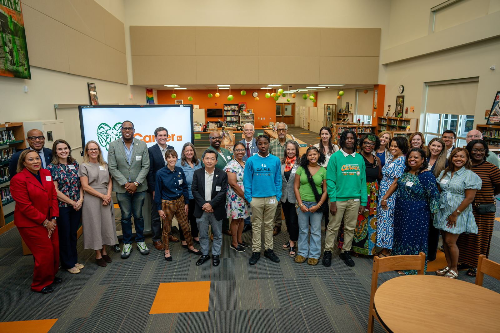
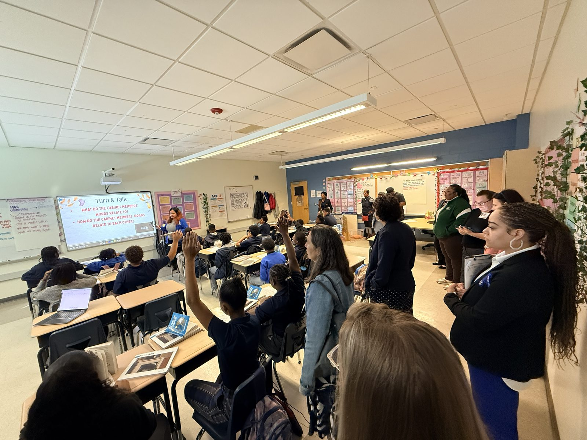
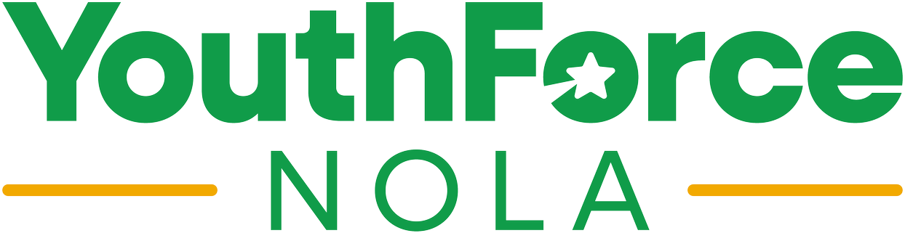

YouthForce NOLA Steering Committee
Before Wednesday’s visit, please take about ten minutes with the two short pages below.


The Fund
Read more about the New Orleans AI Education Fund
Our purpose is to help schools make strategic, instructionally sound decisions about AI.
Read more →What you will see
Learn more about Coursemojo
Two short videos and a few points about the AI tool you will see in Carver’s English classes.
Watch and read →About the Fund
The New Orleans AI Education Fund accelerates academic gains across the city by helping educators and schools use AI thoughtfully, strategically, and in service of student learning. We see AI as a tool to help educators have their greatest impact, while never sacrificing the human connection that makes schools vibrant and nurturing institutions.
The Fund launched in 2025 in response to requests from local educators and system leaders for help navigating AI in their schools. It is a time-bound effort, running on a five-year horizon from 2025 to 2029. We are grateful to our anchor funders, The Booth-Bricker Fund, New Schools for New Orleans, and Rosenthal Family Foundation, for their collaboration and support.
2025-26
Year One Impact Report
Read more about what the Fund did in its first year and what comes next.
Read the report →Coursemojo is an AI teaching assistant for English classes. You will see it in Carver’s English classes on Wednesday.
What is Coursemojo? A two-minute overview
Mojo in Action: a classroom video
Four charter networks use it this year, with support from the AI Fund: Collegiate Academies (which runs Carver), Crescent City Schools, FirstLine Schools and KIPP New Orleans.
August to October 2026, from Coursemojo’s usage reports.
The thing that made Coursemojo easy for teachers is that it’s not additional. I’m not asking teachers to add this into whatever their routine already is. We’re just taking the final third of class and putting it on a computer.
CBS Evening News, November 5
How an English teacher uses AI to help students learn
Watch the story →
Prepared for
The YouthForce NOLA Steering Committee
Visit to G.W. Carver High School, Wednesday, November 18, 2026